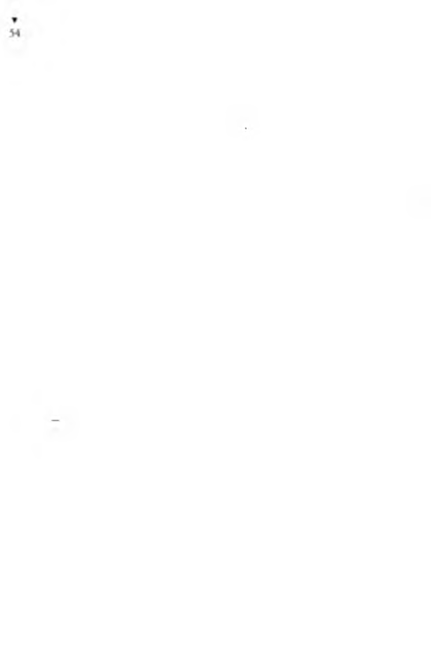

göre, kızın babası damadını yerin dibine batırırken kızını öve
öve göklere çıkarır; buna karşılık oğlanın babası da gelini yerip
oğlunu över. Ordakiler de bu şakadan gevezeliğe gülerler. Böyle
böyle pazarlık kızışır.
Babam başladı söze: “Oğlumu bir bilmeyen mi var; övsem,
övgüsüne söz yetmez... Yürek dersen yürekli, bilek dersen bilekli... Ben yüzümü eğdim, kızını istedim. Verirsen başımıza taçtır, evimiz kızına muhtaçtır. Vermezsen de günlün hoş ola!”
Anşe’nin akrabaları, babamın bu sözlerine alaylı alaylı gülüştüler.
Bu kez Anşe’nin babası aldı sözü: “Kızım biri bin eder, aza az
demez, yoka yok demez; yoku çok eder, açı tok eder. . .”
Babam aldı sözü: “Kızdır nazdır, biliriz, ne versek azdır...
İşte bütün bunlar o sümsük kızın için. Söyle daha başka ne
istersin?”
Bu kez bizim akrabalar alaylı alaylı gülüştüler.
Aldı sözü Anşe’nin babası: “Senin hayta gezen oğlunu çekip
çevirir kızım... Ne verdin hele bir görelim...”
Babam sayıp döktü, sonra da, “Onbin kayme...” dedi.
“İyidir. Ya avradın has kızıma neler verecek?..”
“İki Reşat altınıyla bir beşibirlik...”
“He demelik, üç de öküz isterim...”
“Gelinimize az bile, verdim gitti...”
“Ya Olukludaki tarlayı?..”
Bir sıkı pazarlık başladı. Söyleşip gülüşülüp, tartışıp konuşulup, sonunda birbirlerinin ellerini salla ha sallayarak pazarlığı kesiştiler, düğün gününü kararlaştırdılar. Bunun üzerine bizim
akrabalardan iki delikanlı yanıma gelip, kollarıma girip beni
evden bahçeye çıkardılar. Ben de töre gereği, Anşe’nin babasının
elini öptüm.
Biz bu sevinç içindeyken, bizim bahçeye iki candarma girdi.
Candarmanın biri, “Reşit oğlu Yaşaaar! Nerde bu herif?” diye
bağırdı. Ben ileri fırlayıp, “Buyur kardeş, benim!” dedim.
“Şensin, öyle mi? Acele karakola gideceksin, karakol komutanı
seni istiyor!”
Konukları orda koyup babamla birlikte candarma karakoluna
koştuk. Komutanın karşısına çıktık.
Babam, “Bizi çağırtmışsın komutan, buyur, geldik!” dedi.
Candarma komutam, babamı tanıdığından, nedense gönülsüz
bir selam verip, “Bu ne iştir Reşit Ağa?” dedi.
“Nedir, holmüş komutan?”
“Daha holsün, bugüne dek hatırını saydık... Yani senin oğlunu
zorla mı askere göndereceğiz?”
Ben hemen sözü alıp, “Aman komutan, neden zorla olsun.
Benim askerden kaçtığım yok ki... Vara askere alsalar da, ben
de yaşadığımı anlasam...” dedim.
Komutan,
“Ne demek o?” diye sordu.
Babam açıkladı: “Şu demek ki, oğlum Yaşar, hükümet kaydına
göre resmen ölmüştür, daha üç yaşındayken Çanakkale’de şehit
düşmüştür.”
“Senin aklından zorun mu var?” diye bağırdı komutan.
Babam, “Biz,” dedi, “nüfus memurunun yalancısıyız; nüfus
memuru da kütük defterinin yalancısı...”
Candarma komutanı, “Yahu, ne diyorsunuz siz; karşımda
dibek tokmağı gibi dinelen adamı, bana ölü diye mi yutturacaksınız?” dedi.
Babam cevap verdi: “Evet, biz de aynen böyle dedik nüfus
mem uruna ve de müdürüne. ‘Karşında dibek tokmağı gibi duruyor!’ dedik. Gelgeldim, nüfus kütüğünde şehit göründüğünden nüfuskâğıdı vermiyorlar.”
Ben de ekledim: “Nüfuskâğıdım olm adığından okula da
gidemedim...”
“Okul başka, askerlik başka... Askerlik vatan görevidir. Askere
gidersin, hem de öyle bir gidersin ki vızır vızır... Vatan görevinden
kaçılmaz!”
“Kaçan yok ki komutanım. Ah bir askere gitsem de, yaşadığım
resmen bilinse...”
Candarma komutam yapılacak işlemi anlattı: “Biz şimdi burda,
‘nüfuskâğıdı yoktur, sonradan alınacaktır’ diye bir zabıt yapar,
Yaşar i doooğru şubesine göndeririz. Askerlik şubesi de askere
alır, birliğine yollar.”
“Allah senden razı olsun...” diyerek, öpmek için eline vardım.
Babam da, “Sayende oğlanın yaşadığı anlaşılır, biz de bu
dertten kurtuluruz...” diyerek dualar etti.
Hemen candarma komutanının dediği tutanak düzenlendi.
İster istemez düğünümüz geriye kaldı. Terhis olduktan sonra
evlenecektik. Askere gidişime Anşe çok sevindi. Ayrılırken,
“Yaşarim, ben seni dönesiye de beklerim, ölesiye de beklerim.
Bizim yazgımız bir yazılmış...” dedi.
Askerlik şubesine vardım. Ordan beni bir askeri birliğe gönderdiler. Öyle sevindim, öyle kıvandım ki, keyfime hiç diyecek yoktu...
N um arasız O lm az
Y a ş a r Yaşamazın cezaevine sokuluşunun üçüncü günü akşamıydı. Bütün hükümlüler, tutuklular koğuşlara cıkılmişti. Nöbetçi gardiyanla birlikte Yarımporsiyon koğuşlarda sayım yapmışlar,
kapıları kapayıp gitmişlerdi. Koğuşlar dolusu insan dertleriyle baş
başa kalmıştı. O dayanılmaz mapus akşamı başlamıştı...
ikinci kısmın birinci koğuşunda akşam yemeği hazırlığı vardı.
Koğuşu, tepeden sarkan tek lambanın yaydığı ölü gözü gibi bir
ışık zor aydınlatıyordu, Çay ocağında tenekeden bir kapta çay
suyu kaynıyordu. Bu kabın üstünde, dibi isli, kırmızı bir demlik
vardı. Koridor dibindeki heladan yayılan keskin sidik kokusuyla, koridordaki teneke mangallarda, maltızlar üzerinde kavrulan soğan, pişen yemek kokulan birbirine karışıyordu. O saatlerde
koğuşta konuşan pek yoktu. Yalnız koridorda gidip gelenlerin
takunyalarının, şıpıdıklarının tıkırrılı sesi duyuluyordu. Kimisi
maltızı, mangalı bir gazeteyle yelliyor, kimisi isli tencerelerdeki
yemekleri karıştırıyordu. Aradabir, birer tabak tencere yemeği
satanların bağırmaları duyuluyordu:
- Haniya, lobya verelim, lobya... Tabağı beş patakoz...
Bir saz sesi duyuldu. Önce inceden inceden çalınan sazın gittikçe yükseldi sesi. Saz sesinin duyulmasıyla, bütün öteki sesler kesildi birden; yürüyenler durdu, dikilenler çömeldi, yatanlar
doğruldu. Nerden geliyordu bu saz sesi? Alışılmış, duyulmuş
şey değildi; buyüzden saz sesi bir güzellik şaşkınlığı yaratmıştı.
Derken saz, bir türküye eşlik etmeye başladı:
Bir kara talih kovaladı beni
Umutlar saldı oyaladı beni
O nulm az yerden yaraladı beni
Sarsın yaram ı çağırın Anşe’m i
Sazı çalan da, türküyü söyleyen de Yaşar Yaşamazdı. Alt ranzada yatağına oturmuş, sırtını duvara vermiş, çökmüştü sazına...
Sesi de bir yanıktı, bir içliydi. Koğuştakiler çok duygulanmışlardı,
belki Yaşar’ın sesi o denli güzel değildi, belki sazı ustalıkla çalmıyordu ama onlara mapusluğun verdiği eziklikle, duygusallıkla, sazların da, seslerin de en güzeli gibi geliyordu. Çölde susamışlara
suyun kötüsü bile nasıl duru kaynaktan fışkıran yaşam suyu gibi
gelirse işte öyle... Yaşar Yaşamaz’ın türküsü öyle dokunaklıydı ki,
çoğunun gözleri buğulanmıştı.
Yaşar türküsünü bitirince koğuştan yer yer,
- Yaşa Yaşar, yaşa Yaşar! sesleri yükseldi.
Yaşar,
- Yaşasak iyi ya, nasıl yaşayacağız ağbiler hükümet yaşatmayınca... dedi.
Yaşar ın serüvenini bilmeseler belki de türkü o denli dokunaklı
gelmezdi. Cezaevi akşamının üzüncüyle türkü daha bir etkili
olmuştu.
- Gel Yaşar oğlum, gel!.. Anlat şu işi hele...
- Anlatayım emice...
- Anlattıkça boşalır rahatlatsın.
- Candarma seni şubene gönderdi, sonra?
- Şubem de beni birliğime yolladı. Askerliğe başladım ki,
ııasıl bir askerlik... Hani derler ki, kırk asker kaldırmak için,
bir yumurtayı yatak çarşafına koymuşlar da, kırkı çarşafın
bir ucundan tutup, haydi hooop diye diye yumurtayı şurdan
şuraya taşımışlar. Ben tam tersine... Askerlikte hiç angaryacılık
yapmadım ki, üstlerimin gözüne gireyim de beni beğenip elime
nüfuskâğıdı yerine geçecek sağlam bir belge versinler, askeriye
belgesi ki, koç boynuzuyla açılmadık kale kapılarım bile açar. Kırk
kişinin yapacağı işin altına giriyorum. Hiç kaytardığım yok. Her
nerde, her kim, “Yaşar!” dedi mi, hoop karşısındayım. Anlayın,
nasıl askerlik ettim ki, hiçbir üstüm bana bikez olsun eşşek bile
demedikten başka, bir tokat, bir fiske vuran olmadı; askerlikte
hiç görülmüş şey midir? öy le bir terhis tezkeresi alacağım ki
Allahın izniyle, benim de her yurttaş ve her seçmen gibi yaşadığım
hükümetimce anlaşılacak ve o tezkerenin yanında nüfuskâğıdı
hiç kalacak...
Aylar, yıllar geçti, benim kur’am terhis oldu, benimle askere
gelenler tezkere aldı, askerlik sürem dolup geçti ama, ben terhis
olmadım. Kimseye de gidip, benim terhisim ne zaman diye soramıyorum korkumdan; çünkü nüfuskâğıdım olmadığı akıllarına gelecek... Günlerden bigün, bölük kaleminde yazıcı çavuş olan
arkadaşımız, “Yaşar Yaşamaz! Yaşar Yaşamaz!” diye talim alanında
ünneyip duruyor. Koşup vardım:
“Buyur çavuşum!”
“Koş, seni yüzbaşı çağırıyor!”
Yüreğim hop etti bikez. Olsa olsa terhis işidir diye içime
doğdu.
“Neymiş ki acep çavuşum?”
“Sanırım senin terhis işi için... Yahu Yaşar, seni terhis edemiyorlar be...”
Sanki bilmezmişim, ben bilmezden gelirsem başkaları da
bilmeyecekmiş gibi, “Deme! Niye çavuşum?” diye sordum.
“Nüfusta kaydın bulunamıyor. Nüfuskâğıdın da olmayınca...”
“E, ne olacak şimdi?”
“Sen hele git yüzbaşıyı gör!”
Sizden iyi olmasın çok iyi bir yüzbaşımız vardı ki, iyi yüzbaşı
olursa bu kadar olsun. Alayda en az döven subay diye adı çıkmıştı,
ancak haftada, on günde bir adam döver, ama dövdüğü eri sakat
komazsa pek sağlam da bırakmazdı.
Uçbuçuk ataraktan vardım yüzbaşının huzuruna. Topuk küt-
letmesiyle selamı çakıp, “Buyur komutanım, beni istetmişsin!”
dedim. Bu bizim yüzbaşı, “Adın ne?” diye sorsa da, “Yaşar!”
desem, acaba korkudan yanlış mı söyledim diye titrerdim. Demek, yüzbaşının az döveni, insanı daha çok korkutuyor. Öyleyse
N U M A R A S I Z O L M A Z
▼
53
yüzbaşının hiç dövmezi, adamı korkudan öldürecek... Döveninden korkulmaz, çünkü alt yanı biliyorsun ki dayak atacak. Ama dövmezinin ne yapacağı belli değil, kesecek mi, parçalayacak mı,
doğram doğram doğrayacak mı? Neyse, bizim yüzbaşı -Tanrı
yolunu açık etsin- “Haaa, oğlum Yaşar, arkadaşların hep terhis
oldu çoktan, seni terhis edemiyoruz,” dedi.
Nedenini bilmezden gelip,
“Neden ki yüzbaşım?” diye sordum.
“Nüfuskâğıdın olmayınca işlemini yapamıyoruz.”
Sanki hiçbişeyden bilgim yokmuş gibi, acımalı bir durumda
başımı önüme eğip bekledim.
“Biz alaya bildirmiştik nüfusun yok diye. Alaydan şubene yazıldı. Şubenden de cevap geldi. Dinle, gelen cevabı okuyorum.”
Okudu: "Filan tarih, filan sayılı yazınıza cevaptır. Künyesi
sorulan Reşit oğlu Yaşar’ın 1935 yılında askerliğini yaptığı sırada
Dersim harekâtına birliğiyle katılarak şehit olduğu kayıtlarından
anlaşılmıştır. Bilginize sunulur.”
Ben birden kendimi yitirip, “Olamaz, olamaz yüzbaşım!” diye
bağırdım ama, bağırmamdan yüzbaşı kızacak diye de ödüm patladı. Oysa, güldüğünü hiç görmediğim o yüzbaşı, “Elbet olmaz canım, şehit olan adamın burda işi ne?” dedi.
“Ondan değil yüzbaşım... Dersim’de şehit düşmüş olamam
ben, çünkü çok daha önce, Çanakkale Savaşı’nda şehit düşmüş-
. .
M
tum.
Yüzü gülmez yüzbaşının gülümseyişi birden dondu, sunturluyu
savurduktan sonra, “Ne diyorsun len sen?” diye sordu.
Şimdi şamarı çarpacak diye korktuysam da yine direndim:
“ 1.915’te şehit olan bir adam, ikinci kez de 1935’te şehit olabilir
mi yüzbaşım? Besbelli, bir yanlışlık var bunda...”
Yüzbaşı, yüzüme bir şaşılası şaşılası bakıp, “Yaşar! Yaşar oğlum
dedi.
Beni deli sandığını anladım.
“Buyur yüzbaşım.”

“Yaşar oğlum.”
Bu kez açıklamak zorunda kaldım:
“Askerlik şubesi Dersim’de öldüğümü yazıyor ama, nüfustaki
kütüğüm de de Çanakkale’de öldüğüm yazılı. Buyüzden nüfus-
kâğıdı da alamadım ya... Bir de nüfus dairesine yazıp sorulsun...
O zaman Dersim’de şehit düşmediğim anlaşılacak. Doğru cevap
gelir ordan, Çanakkale’de öldüm diye...”
Yaşar Yaşamaz, çevresindeki koğuş arkadaşlarına,
- îşte böyle ağbiler, dedi. Okula gitmek isterim, sen ölüsün
derler, askere alacakları zaman, yaşıyorsun derler. Terhis olacağım,
bu kez de yine, ölüsün derler.
- Peki, sonra nasıl terhis oldun? diye sordu biri.
- Dediğim gibi yaptılar; bizim oranın nüfus memurluğuna
yazıp sordular. “ 1915’te şehit düşm üştür” diye cevap geldi. Her
ne yaptımsa, yaşadığımı bitürlü ispat edemedim ki, terhis tezkeremi alayım. Sonunda, alay komutanı, Allah ondan razı olsun, askerliğimi yaptığımı bildirir elime mühürlü bir belge verip beni
kışladan saldı.
- Eeee? Sonra?
- Sonra, kasabaya döndüm . D öndüm ama...
Gene ne oldu yahu?
- Son biriki aydır babamdan mektup gelmiyordu, m ektuplarıma cevap da yok... Neyse, biraz param vardı. Terhis haberim çıkınca bir takım elbise aldım. Çuhadan külot pantol... Bir de
föter şapka... Elimde tahta bavulum var, kasabaya yaklaşıyorum.
Yürürken ayakkabılarım da öyle bir gıcırdıyor ki, sanırsın, tümenin bandosu çalıyor. Ben ayakkabının gıcırtısına ayak uydurmu
şum, düzgün adımla gidiyorum. Bütün düşüm, düşüncem hep
Anşe’de olduğundan, belki kapı önünde olur, kapı önünde olmasa
da, içerden ayakkabımın gıcırtısını duyup pencereden bakar diye,
Anşe’nin evinin önünden geçiyordum. Görünürlerde Anşe yoktu
ama, babası kapıdan çıkıyordu. Beni görünce, “Hoşgeldin Yaşar
oğlum,” dedi ama, bir buruk dedi. Eline varıp öptükten sonra,
“Hoşbulduk,” dedim. “Başın sağolsun Yaşar oğlum,” dedi. Durup
yüzüne baktım. “Mektubumu almadın mı?” diye sordu. Demek,
ben yola çıktıktan sonra mektubu gelmiş ki, elime geçmedi.
“Bir babam kalmıştı dünyada; o da ölünce sipsivri kaldım
ortada...”
“O nasıl söz Yaşar, biz neciliğiz! Baban yoksa, biz varız...”
“Sağol...”
“Baban rahat öldü. Ölürken yanındaydım. ‘Gözüm açık gitmiyor, oğlana nüfuskâğıdı çıkaramadım ama, çok şükür askere aldılar, nasıl olsa eline tezkere verirler de, Yaşar'ımın da yaşadığı
resmen anlaşılır,’ dedi. Son sözü bu oldu.”
Kendimi tutmaya çalıştımsa da olmadı, başladım ağlamaya.
Anşe’yi görmeden evimize koştum. Akşamı, Anşe’nin babası eve
gelip, “Yaşar oğlum, tahsildarlar arıyor seni,” dedi.
“Tahsildarlar ne’yleyecekmiş beni?”
“Bir haftadır gelip gidiyorlar. Baban rahmetlinin devlete, bankaya filan vergi borcu varmış da... Tek mirasçısı sen olduğundan, babanın borcunu da senden istiyorlar.”
“Canım, nasıl olur... Ölmüş adam borç öder miymiş! Hem de
ben iki yerde birden çift ölmüşüm, hiç borç ödemem.”
“Ödeşen iyi olur Yaşar oğlum... Niye? Çünkü, babanın borcunu ödememek için, miras hakkından da vazgeçmen gerekir.
Sonra mirasını da alamazsın. Borç harç edip babanın borçlarını
ödeyeceksin ki, mirasını da alabilesin.”
Damadı olacağım ya, buyüzden mirasımın elden yitmesini
islemiyor. “Ölüm hak, miras helal” demişler, kim bırakır mirasını
devlete canım!.. Neyse ki, babamdan kalan miras yüklüce oldu
ğundan borç bulmam kolay oldu. Gırtlağıma dek borca girdim.
Nasıl olsa, mirasımı alınca, faiziyle öderim.
Babamın vergi borçlarını, banka borçlarını, devlet borçlarını,
n/cl kişilere borçlarını hep ödedim. Sıra geldi, benim alacağıma...
Bizim orda Kurşunlu Cami avlusundaki dilekçeciye gidip öyle
bir dilekçe yazdırdım ki, eh işte, dilekçe olursa öyle olur. Kale-
minden kan damlar bir adamdır bizim dilekçeci... Yani nasıl bir
dilekçe ağbiler, dilekçeyi koyunun önüne koy o bile anlar ne yazılı
olduğunu... Gelgelelim, asıl anlatmak istediklerime, anlamaları gerekenlere anlatabilirsen anlat... Götürdüm dilekçemi götürülecek yere, verdim bir memura... Verdim dediysem, burda söyleyiverdiğim gibi, şıp diye olmadı bu iş... İlkin, işimi yapacak memuru arayıp bulmak var. Buldum. Sıraya girip beklemek var. Bekledim.
Bakalım, sıra gelir mi? Nah, gelir... Paydosa denk getirmeden
dilekçeyi vereceksin. Öyle yaptım. Aldı dilekçemi. Şöyle bir baktı,
sonra çenesiyle taa ötede, başka masadaki bir memuru gösterdi.
Yahu, adamın bir çene işareti yapması için bigün masasının
önünde bekleyip durmuşum. Neyse, götürdüm ona. Bu kez bu,
okumadı, hatta bakmadı bile, dilekçe kâğıdımın üstüne, elindeki
mührü öyle bir çarparak vurdu ki, de ki mühür basmadı da, şamar
çarptı; de ki tokat vurdu, de ki yumruk attı. Elindeki o mührü
bırakıp bir damga aldı, bu kez damgayı, düşmanının ümüğüne
çöker gibi kâğıda bastı. Artık zavallı memur, karısına mı kızmış,
çocuklarına mı kızmış, ev sahibine mi, müdürüne mi kızmış,
komşusuyla mı kavga etmiş, alacaklısından mı canı yanmış, her
ne olmuşsa olmuş, bütün kızgınlığını benim dilekçemden çıkardı.
Biriki mühür, biriki damga vurdu. Son damgayı kâğıda bastıktan
sonra, damgayı kaldırmadı da, bütün ağırlığıyla damganın üstüne
öyle bastı ki, bu sırada kalçası sağa sola sallanıyordu. Neyse,
uzatmayalım, ben o masadan ötekine, öteki masadan berikine,
beriki masadan şu odadakine, şu odadakinden bu odadakine,
aylarca koşuştum durdum. O benim zavallı dilekçeme ne damgalar vurdular, ne mühürler bastılar, ne imzalar attılar, ne tarihler yazdılar, hele hele ne numaralar koydular... Bütün bu imzalara,
damgalara, pullara, tarihlere, hele o numaralara benim dilekçem
yetmediğinden, üstüne daha ne kâğıtlar eklediler. Benim dilekçem
büyüye büyüye oldu bir koca tomar. Allah Allah! Gel de şaşma!
Babamın borçlarını ödeyeceğim zaman, şıp diye parayı elimden
alıverdiler. O zaman işlem, böyle aylarca değil, günlerce değil,
bir saat bile sürmemişti. Sıra alacağımı almaya gelince, git-gel,
git-gel, bitmeyen bir sürünceme... Bu işler hep bizim kasabada
olup bitse, öpüp başıma koyacağım. Kasabamızın bağlı olduğu
ile de gönderiyorlar. Orda da günlerce otellerde sürünüyorum.
Neyse, çok uğraştırdılar beni ama, sonunda...
Dinleyenlerden biri,
- Mirası aldın mı Yaşar? diye sordu.
Yaşar,
- Dur yahu, dedi, nerde o bolluk...
- Ee sonunda, dedin ya...
- Sonunda alacağım mirasın kaç para olduğu anlaşıldı. Benim
hesabıma göre, alacağım onbeş yirmibin lira tutacaktı. Oysa onların hesabına göre üçbin liraymış...
- Eyvaaah!
- Eyvah ki, hem de nasıl eyvah... Bilseydim üçbin lira oldu
ğunu, babamın mirasını reddeder, boşu boşuna borçlarını da
ödemezdim. Çünkü ben babamın borçları olarak, alacağım mirastan daha çok para ödemiştim. Yani, benim hesabımla onların hesabı birbirine uymadı.
- Hesap bu, nasıl uymaz?
- Doğrudur, uymaz...
- Bak anlatayım nasıl uymadığını. Biz okuldayken, sınıfımızda
elli öğrenci vardı. Öğretmenimiz hepimize bir hesap sorardı.
Hepimiz aynı hesabı başka başka yapardık. Hiçbirimizin çıkardığı
sonuç, öbürününkini tutmazdı. Öğretmen de bir başka türlü
sonuç çıkarırdı. Düşün... Her sınıfta elli kişi... Şimdi onların hepsi
bir işin başına geçtiğinden, hesapların birbirini tutmamasına hiç
şaşmam.
- Peki Yaşar, sonunda kimin hesabı doğruymuş?
- Kimin olacak yahu... Benim gibi bikez şehitliğe kanmayıp iki
kez şehit olan nüfuskâğıtsız birinin hesabı doğru çıkacak değildi
ya, elbet onların hesabı doğru çıktı.
- Tüh beeee...
- Ne yapayım, üçbin lira üçbin liradır, alayım dedim. Al
bakalım alabilirsen... Üçbin lirayı alacağım diye, daha çoğunu
harcadım. Eh, üç beş üç beş harcandığından insanın gözü görmüyor; hiç olmazsa toptan üçbin lira alacağım.
- Bankaya para yatırır gibi desene...
- Bankada para biriktirm ekten farkı şu ki, çok yatırıp az
alıyorsun. Ama, hiç olmazsa toptan alıyorsun. Ben bu üçbin
liranın ardından tam iki yıl koştum durdum. İşi sonuna vardırdım. Yüzdük yüzdük, kuyruğuna geldi. Elimdeki tomarın en üstündeki kâğıdı bir memura imzalatıp hemen gidip vezneden
parayı alacağım Allahın izniyle...
G ötürdüm o memura, “Ben gene geldim beyim ,” dedim,
“herbişeyi, ne söylediyseniz hepsini yaptım, bitirdim. Onaydan
da çıktı çok şükür. Artık tamam... Paramı almaya geldim.”
“Alırsın inşallah!” deyince memur, kafamın tası attı. “Artık
bunun inşallahı maşallahı kaldı mı beyim, işte buraya ‘Verile!’
diye yazılmış. İki yıl koşuştum ama sonunda bütün işlemleri
yaptırdım.”
“Ver bakalım, hepsi tamam mı?” diye elimdeki tomarı aldı.
“Hepsi tamamdır... Bir sizin havaleniz kaldı beyim...” dedim.
M emur, kalın tom arın her bir kâğıdını kaldırıp, pullara,
mühürlere, damgalara, tarihlere bakıp bakıp, “H ım m m m m ...
Bu tamam... Kaydı da yapılmış, iyi...” diyor, onun her böyle söyleyişinde sanki sevinçten yüreğim kanatlanıp pır pır ediyordu.
“Eski senet...Tamam... O davar... Bakanlıktan cevap? Gelmiş.
İyi, çok iyi... Harç yatırılmış mı? Evet, yatırmışsın... Güzeeel...
Pullar da tamam. Parafe? Etmişler... İyi...”
Keyfimden sırıtıp duruyordum memurun karşısında. Memur,
işte böylece tomarın kâğıtlarını evire çevire “iyi”, “güzel”, “olmuş", “tamam”, “aferin”, “o da var”, “bu da var” derken birden,
‘ Aaaaaah!” deyip kaldı. Öyle bir ah çekti ki, sesi kesildikten sonra
da ağzı bisüre açık kaldı öylece...
“N ’olmuş M emur Bey?” dedim.
“Yahu, rapor var, evet rapor var ama, ilişikteki raporun dosyadaki kayıt numarasını yazmamışlar buraya!”
“Yazmamışlar mı! N ’öreceğiz şimdi?”
“Gidip o numarayı da yazdıracaksın.”
“Aman beyim, etme... Bizim evraka o kadar çok numara
yazıldı ki, baştan aşağı numara doldu vallaha... Bitek o numara
da olmayıversin varsın.”
‘Bana göre hava hoş... Ben havale ederim...”
“Hay Allah razı olsun... Allah ne muradın varsa versin...”
Ben ardı kesilmeden dua edip dururken, memur, “Valla,” dedi,
“ben ederim havale etmesine ama, o dediğim numara olmazsa
parayı vermezler. Sen bilirsin, ben karışmam... Numara olmayınca
boşuna gideceksin, parayı alamazsın.”
Nasıl oldum ağbiler, hani kesseler kanım akmayacak, öyle
dondum kaldım.
Memur bile acıdı da, “Hadi git de hemen numarayı al gel,
çabucak işini yapayım...” dedi.
“Alması bişey değil, gidip alayım ama, bu sizin daireniz uzak
yerde beyim. Oraya gidip numarayı alıp gelesiye akşam olur,
paydos edersiniz. Yarın getirsem?”
“Olur,” dedi. Ben evrak tomarını alıp giderken, birden, “Aaaa...
Bir dakika!” diye seslendi.
Döndüm: “Buyur beyim.”
“Olmaz! Sen parayı yarın almak zorundasın. Bugünden git
numarayı al ki, yarın da paranı alabilesin. Yarın alamazsan bir
daha alamazsın o parayı.”
“Neden beyim? Hak edilmiş param değil mi bu? Ne zaman
istersem, o zaman alırım.”
“Sen dediğimi dinle; bu numarayı bugün yetiştirip de yarın
almazsan bir daha hiç alamazsın.”
“Peki, neden?”
“Düyuna kalır da ondan,,. Düyuna kaldı mıydı, işte o zaman
yandın. Düvuna kalmış bir parayı devlet hâzinesinden söküp
almak için bir öm ür ya yeter, ya yetmez... Yanar gider para.
Başıma geldi de ordan biliyorum.”
“D üyuna mı kalırmış? Peki neden kalırmış o düyuna?”
“Paranı almak için gecikmişsin...”
“Kim gecikti beyim... İki yıldanberi beni, pul diye, damga
diye, tarih diye, cevap diye, rapor diye, imza diye, numara
diye ordan oraya koşuşturdular, geciktirdiler. Şimdi de düyuna
kalacakmış!”
O memur, her nasılsa iyi bir adammış, “Aman çok bağırıp
durma, bizim şef duyar da, devletin memuruna hakaretten zabıt
tutturursa, başın derde girer, gidip o numarayı da alamazsın...”
diye fısıldadı.
Sesimi alçaltıp, “Peki, ne yapacağım?” diye sordum.
“Valla, benden söylemesi... Yarın, bankalar kapanmadan, saat
onyediye kadar paranı aldın aldın, alamadınsa para yandı...”
“Para nasıl yanar canım...”
“Yanmasına yanmaz... Yansa, hiç olmazsa u m udunu keser
kurtulursun. Yanmasından da beter, uğraş dur işin yoksa ölene
dek...”
“Öyleyse ben hemen gidip numarayı alıp geleyim. Vakit de
az, hay Allah...”
Arkamdan, “Bankalar kapanmadan yetiş am an...” diye seslendi.
Ben de, “Sağol beyim...” dedim, yel olup sokağa savruldum.
Yaşar Yaşamaz ın anlattıklarım dinleyenlerden bir hükümlü,
- Vay gidi Yaşar Yaşamaz vaaay... Bir de üstelik babanın vergi
borçlarını ödedin ha! dedi.
Başka bir hükümlü,
- Namuslu delikanlı be... diye sırtararak alay etti.
Yaşar,
- Okula gidecekken yaşamıyorum, askere alırlarken yaşıyorum, terhis olacakken yaşamıyorum, babamın vergisini öderken yaşıyorum, mirasımı alacakken yaşamıyorum... dedi.

Koğuştakilerin hepsi birden bir şaşkınlık belirtisi olarak, bir
ağızdan koro gibi,
- HaydaaaaaL diye bağırdılar.
Yaşar,
- Dilim damağım kurudu ağbiler, dedi.
Koğuşun yaşlısı,
- Ocakçı oğluuum, çayları tazele! diye seslendi.
Sonra da Yaşar’a,
- Ah be oğlum, dedi, neden Karakaplı Nizami Beye başvurmadın! Tüh...
Azkalsın Yaşar, “Kim bu Karakaplı Nizami Bey?” diye soracaktı, toyluğu anlaşılmasın diye sormaktan vazgeçti.
Bir hükümlü,
- Bu memlekette, Allaha çok şükür Karakaplı Nizami Bey
varken, bitek numara için çekilir mi bunca sıkıntı, dedi, git
Nizami Beye, sana istediğin numarayı versin... O nda numara
çoook, numaranın türlüsü var; o kadar çok ki, dünyanın en
zengin numara koleksiyonu onda.
Yaşar Yaşamaz, kendisiyle alay edildiğini sandığından sesini
çıkarmadı.
Çaylarını içiyorlardı.
Yaşlı hükümlü,
- Vur şu saza be Yaşar! dedi.
Yaşar, sazını aldı, çalıp söyledi.
Bir kara talih kovaladı beni
Umutlar saldı oyaladı beni
Onulmaz yerden yaraladı beni
Sarsın yaramı çağırın Anşe'mi
H epsinin Kapısı Bir Başka Türlü
ik in ci kısmın birinci koğuşundan, hırsızlığı yüzünden kovulan
anlatıcının yerine geçmişti Yaşar Yaşamaz. Her akşam koğuşta
yoklama yapılıp hükümlüler yemeklerini yedikten sonra Yaşar
Yaşamaz’ın başına toplanıyor, ille de anlatması için üsteliyorlardı.
Yaşar Yaşamaz’ın da anlatmak için pek öyle nazlandığı yoktu.
İyi ki anlatmasını istiyorlardı; ya bir de anlatıp içini boşaltmasa
patlardı sıkıntısından, derdinden...
Yarımporsiyon, düdüğünü öttüre öttüre, biyandan da ağzından
düdüğünü çıkarmadan bağırıyordu:
- İçeriii, içeri!
Göğsü bağrı açık olduğu için, göğsündeki tıraşbıçağı yaralarının çizik çizik izleri görünen bir delikanlı,
- Herkes içeri, diyor... Bir tutturmuşlar: İçeri, içeri! Bir Tanrı
kulu da çıkıp, hadi dışarı demiyor... diye bağırdı.
Bu sözleri duyan Yarımporsiyon düdüğünü daha hızlı, daha sert
öttürdükten sonra, kime söylediği pek belli olmadan, ortaya,
- Ananı eşşek kovalasın, len gir içeri! diye bağırdı.
Bir hükümlü sordu koridordaki ne:
- N ’oluyor gene arkadaş?
Koridorun başından cırlak bir ses duyuldu:
- Haniya tayıncılar, tayıncılar, tayıncılaar...
Yarımporsiyon,
- Bu koğuş aldı mı tayınını? diye sordu.
Koğuşun kapısında dikilen adam,
- Aldık, Başefendi... dedi.
- Hadi, herkes kendi koğuşunda sıraya girsin... Herkes kendi
yerinee!
İkinci kısmın birinci koğuşundakiler, Yaşar Yaşamazın serüvenini öyle ilginç, öyle meraklı bulmuşlardı ki, onu dinlemek için
çoğu akşamı zor ediyordu. Buyüzden, Yarımporsiyon akşamlan
düdüğünü öttürür öttürmez bemten koğuşa doluyorlardı. Bir
ayak önce yemeklerini yiyip Yaşarı dinlemek için telesiyorlardı.
Yemek pişirenler ellerini çabuk tutuyorlardı.
İyi bir vurgundan sonra yakalandığı için, bu kez cezaevine
paraca yüklü giren bir hükümlü, bir yeniyetme hırsıza,
- Yaşar Yaşamaz nerde, gördün mü? diye sordu.
- Karşıda işte! Tayınını alıyor meydancıdan.
- Seslen de gelsin...
- Heeey! Yaşar Yaşamaz!
Yaşar Yaşamaz yanlarına gelmişti:
- Buyur ağbisi!
- Gel hele, otur.
Öbürü,
- Kayıntıyı birlikte yapalım Yaşar... dedi.
Yaşar,
- Sağolun ağbiler... dedi.
Yemeklerini yiyip çaylarını içerlerken, koğuşun başka hükümlüleri de çevrelerinde toplandılar.
- Tam da en meraklı yerinde bırakıyorsun Yaşar, anlat şu
başından geçenleri...
- Anlatayım ağbiler...
- Miras dalgası ne oldu? Alabildin mi?
- Nerde kalmıştık? Hah, numara... Ben o numarayı almak
için daireden sokağa fırladım. Akşam paydosu olup memurlar
daireden azat olmadan numarayı alıp yetiştirmek istiyorum. Bir
dolmuş arabası bulup binmek için, gelip geçen taksilerin önüne
atılıyorum.
“Dolmuş! Dolmuş mu kardeşim? Neresi?”
Yağmur da çiselemiyor ama gene de şoförlerin burnu havada,
gözü bulutta... Yalvarıyorum, yakarıyorum, bağırıyorum, çağırıyorum, aldıran yok... Şu tersliğe bakın, numarayı yetiştiremezsem bizim para düyuna kalacak...
“Bayım, bay şoför... Kardeş... Dolmuş mu? Samanpazarı
mı?
Her nasıl olduysa bir insan evladı çıkıp, “Evet, Samanpazarı.
Buyur!” dedi.
Evet, dedi. Dedi ama, gel de buyur bakalım buyurabilir-
sen...
“Hay Allah... Hay Allah...” diye söylenmeye başladım.
Şoför içerden, “Ne oluyor yahu, binsene hadi!” dedi.
“Kapı açılmıyor ki bineyim kardeşim.”
“Sola kıvır ağabey, sola kıvır... Kıvır be!”
“Kıvırıyorum yahu, kıvırıyorum ama...”
“Yahu iyice kıvırsana! Kıvır!”
“Kıvırıyorum ama açılmıyor, bu ne biçim kapı?”
“Sen kıvıramıyorsun ki...”
“Ya ne yapıyorum?”
“Okşuyorsun be...”
Bu yeryüzünde hergele hiçbir yerde eksik olmaz ağbiler. Ben
orda dolmuş arabasının kapısıyla boğuşup dururken, her nerden
çıktılarsa beş on hergele ortaya çıkıp “Kıvuır, kıvır baban da
görsün!” diyerek benimle alaya başladılar. Biyandan onlar alay
eder, biyandan dolmuşun şoförü, “Kıvır kıvır!” diye bağırır:
“Sola kıvır, sola!”
“Kıvrılmıyor kardeşim.”
“Sola yahu, sola be! Sen askerlik yapmadın mı?”
Şoför, yanındaki yolcunun sırtından elini uzatıp, “Solunu
sağını şaşırdın büsbütün. Bak işte nah böyle, tak, saat gibi açılır
bu namussuz kapı,” diye söylenerek kapıyı açtı. Teşekkür edip
arabaya bindim. Utancımdan hiç sesimi çıkarmadım. Ama
şoförün açılan çenesi bitürlü kapanmıyordu:
“Ne adamlar var be şu dünyada! Tüh Allah kahretsin!..”
Arabadaki yolculardan yaşlı biri de şoförü destekledi:
“Haklısın, çok haklısın şoför efendi evladım. Bu yaşa gelmişler,
daha sağını, solunu öğrenememişler.”
Şoför destek de bulunca büsbütün coştu:
“Her yolcuya teker teker anlat beybaba... Yahu, bu kapı be,
kapı! Sola kıvırdın mı, tak açılır meret...”
Benim aklım, alacağım numarada olduğu için alttan aldım:
“Hakkınız var. Affedersiniz. Suç benim... Aceleden şaşırdım
herhalde de ondan açamadım. Bir resmi daireden bir numara
almak için acele yetişmem gerekiyor da...”
“Bir araba kapısını açmasını bile bilmeyen bu dünyada ne
diye yaşar bilmem ki...”
Şoföre, “Ulan kim yaşıyor ki zaten, ben iki kez ölmüşüm...”
diye bağırmak geldi içimden ama, işi uzatıp da daireye geç kalırım
diye sesimi çıkarmadım.
Yaşlı yolcu, “Efendim, dikkat etmiyorlar,” dedi, “hep dikkatsizlikten...”
“Beybaba, vallahi bıktım artık be... Kapı açmasını öğretmekten dilimde tüy bitti namussuzum. Bu adamlara kapı açmasını öğretmek için kurs açmalı, kurs...”
“Yok oğlum, yok; medeniyetin okulu, kursu mursu olmaz.
İnsanın kendinde olmayınca ne yapsan boş...”
Birisi de beni savunsun, hiç olmazsa, “Yeter adamcağıza
yüklendiğiniz,” desin diye öbür yolcuların yüzlerine bakıyorum
ama, hiçbiri oralı değil. O yaşlı yolcu, şoföre, “Ben burda ineyim
oğlum,” dedi. Şoför arabayı durdurdu. Yaşlı yolcu bir zaman
kapıyla itişip durdu. Şoför sert, “Hadi insene beybaba!” dedi.
“Nasıl ineyim evladım, kapı açılmıyor ki...”
“Sağa çevir beybaba...”
“Ama demin bu beye sola kıvır diyordun...”
“Allah Allah... Yahu, laf anlayan beri gelsin be... Dışardan sola
kıvrılacak, içerden de sağa...”
Demindenberi yaşlı yolcuya, “beybaba” diyen şoför bu kez,
“Sağa çevir moruk!” diye bağırdı.
Yaşlı yolcu da terslendi:
“Aaaa! Çevrilmiyor işte, zorla mı?”

“Yahu arkamızda arabalar birikti, trafikçi ceza kesecek be...”
Gerçekten de arkamızda biriken taşıtlar durmadan klakson
çalıyordu. Yolu tıkamıştık.
Şoför sinirden başını yumruklayarak, “Ulan deli olacağım be.,.
Sola çeviriyorsun ulan moruk, dışardan sola, içerden sağa ulan,
sağa!” diye bağırdı.
“Ne sağa dönüyor, ne sola... Kıpırdamıyor kör olası...”
“Dur, dur, kapıyı kıracaksın... D ur da açayım...”
Şoför kapıyı açıp da yaşlı yolcu kendini dışarı atınca, “Oh,
çok şükür...” dedi.
Şoför, “Odun oğlu odunlar! Yarmalar! Dağdan inmeler!” diye
sövüp sayıyordu.
Yaşlı yolcunun başına gelen, benim de başıma gelmeden,
hazır kapı açılmışken fırsatı kaçırmayıp ben de inmeliydim.
Şoför gaza basmadan, “Bay şoför, müsaade ederseniz ben de
ineyim...” dedim.
“Sen Samanpazarı’na gitmeyecek miydin?”
“Evet ama... Hazır kapı açılmışken...”
indim arabadan... Başka dolmuş aramaya başladım. Önümden
geçen arabaların şoförlerine sesleniyorum:
“Neresi? Samanpazarı mı?”
Epiyce bir zaman dolmuşların arkasından seslenip bağırıp yalvardıktan sonra biri, “Tamam...” deyip durdu. Kapının kulpunu sola kıvırdım ama, kapı açılmadı. İyi ki şoför, “Yukarı kaldır!”
dedi. Yine açamadım.
“Arkadaş, arabayı yukarı kaldırma be, kapı kulpunu kaldır!”
“Kalkmıyor ki...”
“Asıl be, asıl!”
“Asılıyorum ama açılmıyor.”
Kolunu uzatıp açtı: “İşte böyle... Tık diye açılır bu zamazingo.”
Bindim. Araba kalktı. Şoför, “Boşu boşuna şehir kaldırımı
çiğniyorlar,” dedi. Cimcime mi cimcime bir kadın yolcu sanki
ona sormuşlar gibi, “Burdan başka Ankara yok!” dedi.
Şoför de ona, “Hay ağzını öpeyim ablacım, bir araba kapısını
.ıramayan da artık insanım diye yaşamamalı bu dünyada...” diye
yılıştı.
“Vallahi öyle...”
Sussunlar diye, “Hakkınız var,” dedim, “çok acele işim var
da... Ondan işte, aceleden...”
Bu kez o kadın yolcu, “Kapınız kapanmadı,” dedi.
Şoför de, “Kapını kapat!” diye beni azarladı.
Kapıyı açıp sertçe kapadım. Başka bir yolcu, “Yine kapanmadı,”
dedi. Arabaların kapılarının kapanıp kapanmadığım anlamayan
da yoktur hani... Ömründe ilk kez arabaya binen bile, “Arabanız
kapanmadı,” diye bilgiçlik taslayıp üstün olmaktan hoşlanır.
Ben bir daha kapıyı açıp daha sertçe kapadım.
Şoför, “Hızlı çek be, hızlı çek!” diye bağırdı.
Üçüncü kez kapıyı açıp hızlıca kapadım.
“Yavaş yahu, yavaş be... Ait yanı bir lira dolmuş parası vereceksin, kapının anasını ağlattın be... Haftada bir kapı tamiri...
Kazan kazan, kilitçiye ver.”
Baktım, şoförün susacağı yok. Karşılık versem kavga çıkacak.
Sııssam, dayanılır gibi değil... Şoför biyandan, yolcular biyandan
boyuna çullanıyorlar. Numarayı almak için yetişecek olmasam
altta kalmam ama, ne yapayım ki işim acele... Buyüzden şoföre,
“Uygun biyerde inebilir miyim?” dedim.
Arabayı zınk diye durdurup, “Hadi düş bakalım!” dedi.
Bunlar kapı değil, baş belası...
“Hay Allah, açılmıyor ki...”
“İt be, it!”
“Nereye iteyim?”
“Nereye itilir yahu? İtmesini de bilmiyorsun! İçeri doğru it!”
Bu yaşıma geldim, hiç kapının içeri doğru itildiğini dc duymamıştım.
“İçeri mi iteyim? Yani çekeyim mi?”


“Kapıyı itme yahu, kulpu it! Her yolcuya ayrı ayrı kapı açmasını öğret... Dur, dur, arabayı devireceksin nerdeyse... Dur da açayım.”
Ben arabadan inerken şoför de, “Kaz gibi adam bunlar yahu...”
diye söyleniyordu.
Yetişemeyeceğim de numarayı alamayacağım, numarayı alamayınca da para yanacak diye ödüm kopuyor. Neyse bir dolmuş
daha buldum.
“Girsene beyim...”
“Nerden gireyim kardeşim, kapı açılmıyor ki...”
“Kendine çek, kendine... Kendine be! Yahu, kendine doğru...
Tüh!”
Kızan şoför kapıyı açıp, “İşte böyle!..” dedi.
Arabaya girip de, bu şoför de söylenmeye başlayınca, artık
alacağım parayı marayı unutup ben de açtım ağzımı:
“Aaaa, nedir bu böyle yahu... Ne biçim araba bunlar? Hepsinin
de kapısı bir başka türlü bunların. Bizim ne suçumuz var? Kimisinin kulpunu sağa çevireceksin, kimisininkini sola... Kimi kulpu yukarı kaldıracaksın, kimi kulpu aşağı indireceksin... Kimisinin
düğmesine basacaksın... Nedir bu be...”
Bu dolmuş arabasının şoförü kibar bir adammış; çok nazik bir
sesle dedi ki: “insan bu kadarcık bişeyi de öğrenemez mi yani?
Ford’ların kapı kulpunu sola çevireceksin, Usturbeyker’lerinkini
sağa çevireceksin. Şevrole oldu mu, kulpu iteceksin. Hilman’ları
kendine doğru çekeceksin... Fiat’sa çok kolay; önce bir sağa çevir,
sonra düğmesine bas, kapıyı it, çıt diye açılır. Hele Buik’ler en kolayı; kulpu önce sola çevirirken bastır düğmesine, biraz çekerken hafifçe kaldır, kuvvetlice indir kulpu, şıp açılır... Bu kadar kolay...
Gelelim Folksfagen’lere... Düğmesine bas, kendine çek...”
Arabadaki yolculardan bir genç karşı çıktı:
“O senin dediğin iki kapılı eski model Folksfagen’ler... Dört
kapılı yeni modellerinin kapısını açmak için...”
Şoför, “O da kolay ağbicim,” dedi, “yerer ki insanın öğrenmeye
niyeti olsun...”
.
O genç yolcu, “En kolay Sitroen’lerin kapısını açmak...” dedi.
“Saat gibi... Basacaksın, sonra çekip, yukarı kaldır, dayan! Bak,
nasıl açılıyor. Opel’leıe gelince...”
Başka bir yolcu da, “Topu toplamı yirmi otuz marka otomobil
var. Büyük bir kentte oturan biri, bu kadarcık şeyi de öğrenemezse, artık insanım diye yaşamasın...” dedi.
“Öyle ya, ölsün artık be... Ölsün daha iyi... Hiç olmazsa bir
nüfus eksilir de trafik açılır.”
Arabadaki bütün yolcular şoförden yanaydı.
“Koy önüne bir torba saman, yesin...”
“Sağılsa hiç olmazsa iyi... Sağılmaz ki kardeşim, samana
yazık...”
“Dangalaklık efendim, düpedüz dangalaklık.”
Ben bunların ağızlarının ilacını verirdim ya, ne yapayım ki,
numarayı almaya gideceğim daire paydos olacak da, bizim para
düyuna kalacak diye korkumdan sesimi çıkaramıyorum. Yoksa
ben bilirdim yapacağımı... Zaman olsa, hay lanet olsun arabasına
deyip yayan giderdim ama, koşsam bile yetişemem ki...
Demindenberi beni olmadık sözlerle aşağılayan, her marka
ve her model arabanın kapısının nasıl açılacağını su gibi ezbere
söyleyen genç yolcu, “Ben burda ineyim...” dedi. Araba durdu.
O inmişken ben de ineceğim. Çünkü, şoförle birlik olan dolmuş
yolcularının aşağılamalarına dayanılır gibi değil. Gelgeldim, o
genç inemiyor ki ben de ineyim. Kapıyı zorlayıp duruyor. Sonunda, “Vay alçak kapı, ben hiç böyle kapı görmedim,” dedi.
Şoför, “Ne var?” diye sordu.
“Açılmıyor yahu, sıkışmış...”
Artık dayanamadım da, “Sıkışınca ne yapacaksın, işte asıl onu
bilmeli...” dedim.
Şoför,
“Bastır, bastır!” diye bar bar bağırıyor.
“Neresine bastırayım?"
“Yahu, öm ründe hiç arabaya binmedin mi sen? Neresine
olacak, düğmesine basur be!”
“Ne düğmesi?”
“Pantolon düğmesi... Elbet, kapı kilidinin düğmesi be...”
Kapı birden açılınca, boş bulunan genç de yere kapaklandı.
Ben de arkasından canımı dışarı attım. Koşarak gitmeyi düşündüm ama, bu kez de önümde bir dolmuş durmaz mı! Hem de Samanpazarı’na gidiyor. Yapıştım araba kapısının kulpuna...
Hay Allah!
“Sizin arabanın markası?” diye sordum.
“Dö Soto...”
“Dö Soto mu? Dö Soto’ların kapısı... Hay Allah, nasıldı
yahu?”
“Bastır, bastır...”
Ben artık öyle şaşırmıştım ki, şoföre, “Aşağı mı bastırayım,
yukarı mı bastırayım?” diye sorunca, şoför, “Yukarı bastırılır mı
be!” der demez enayiliğimi anladım. Kapıyı şoför açıp da arabaya
girince, “Öyle ya canım, hiç yukarı bastırılır mı? Akıl mı kaldı
bende...” diye kendi kendime söylendim.
Bu kez şoför sesini çıkarmadı ama, arabadaki yolcular, arabanın
kapısını açamadım diye söylenmeye başladılar.
“Hepsinin de kapısı başka türlü...” dedim.
Çok yaşlı olan bir yolcu, “Bak oğlum,” dedi, “bu dünyada
milyarlarca insan var, hepsi de başka başka... Hiçbiri birbirine
benzemez. Bu senin araba dediğin şeyi insanlar yapıyor. Allah
bile insanların yüzünü birbirine benzetmezken, hiç insan yapısı
arabaların kapıları aynı olur mu? Sende kafa yok mu?”
Ben kendi derdime düştüğüm için ihtiyarın sözlerine aldırmayıp, “Eyvaaah... Yollar da tıkandı. Acele bir işim vardı da, yetişemeyeceğim,” dedim. Çünkü arabamız iki üç dakikada on
metre ancak gidebiliyordu. Benim bu sözüm üzerine şoför, “Ne
o? Tabakhaneye bişey mi yetiştireceksin?” diye alay etti.
“Hayır,” dedim, “bir işim var da devlet dairesinde... Saat beşe
kadar yetişemezsem alacağım park kaynayacak...”
Şoför kahkahayla gülerek, “Nee? Beş mi? Ne beşi yahu, baksana
saat altıyı çeyrek geçiyor...” dedi.
Bunun üzerine yolcular saatlerine bakıp, şoförün saatinin yanlış olduğunu söylediler. Kimisinin saati altıyı onyedi, kimisinin ondokuz, kimisinin de yirmi geçiyordu. Şoförün saatinin saman
yemiş olduğunu söylediler.
“Eyvaaaah... İşte şimdi yandım...” diye söylendim.
Dolmuşların kapılarını açmak için yolda boşuna zaman geçirip
gecikmiştim.
Artık dolmuş arabası ister hızlı gitsin, ister yavaş; ister kapısı
açılsın, ister açılmasın, umurumda bile değildi. Bir yarın vardı
numarayı yazdırıp da parayı almak için... Bakalım yetiştirebilecek
miydim? İki hükümet dairesi birbirine çok uzak. Bir günde işlemi
yetiştirmenin olanağı yok...
Yaşar Yaşamaz’ı dinleyenler_yine hep bir ağızdan koro gibi,
- Haydaaa!.. diye bağırdılar.
Gecenin karanlığını kurşun gibi dele dele dışardan düdük
sesleri geliyordu. Bunlar, cezaevi dış duvarlarının üstünde, nöbet
kulübelerindeki candarmaların düdük sesleriydi.
Ben O Ajen’in Diye Diye
Hükümlülü tutuklular koğuşlarına girmişti. Yemekler pişirilmiş, ısıtılmıyen*lmişti. Nöbetçi gardiyan da yoklama yapmış, kapıları kap'P gitmişti.
Her akşa' bu saatte ikinci kısmın birinci koğuşundakiler
Yaşar’ın çev.dnde toplanırlardı. Yaşar için, başından geçenleri
arkadaşlarınar>latmak bir görev olmuştu. Yaşar Yaşamaz öyle
tatlı, öyle m-îklı anlatıyordu ki, cezaevinde en zor geçirilen bu
saatlerin na sg e ç tiğ ini Yaşar’ın koğuş arkadaşları anlamıyorlardı
bile... Yaşar 1 akşam, bir önceki akşam kaldığı yerden serüvenini
anlatıyordu.
Kız belli Ifücük cam bardaklarda mapusane çayları gelmiş,
c ı g a r a l a r telldirilmişti. Birikişinin gözbebeklerinin kaymasından esrar kende oldukları belliydi.
Daha oniyaşmdayken hırsızlığa başlamış olmakla övünen
yaşlı sabıkalı
- Eee Yas'1 m, anlat bakalım şu senin dalgayı arslanım...
dedi.
Bir genç İH? arkadaşı,
- Tam mklı yerinde kesiyorsun Yaşar... dedi.
Hepsi de nıldadı, oturdukları yerlere daha iyi yerleştiler.
Yaşar,
- Dolmu’da kalmıştık, değil mi ağbiler... dedi.
- T a m a m Sen dolmuştan dolmuşa inip binerken geç kalmışsın, daire paydos olmuş.
Ertesi s;h ağbiler, o eksik numarayı almak için gideceğim
daireye erkerf> damladım. Numarayı nerden alacağım diye sordum ona bur3ir geniş salonda çalışan iki kadını gösterdiler. Hani çalışan d e r s e r 'a n i sözün gelişi... Yan yana iki masaya oturmuşlar.
Biri, iki eliıkrasına bir yün çile germiş, öbürü de çileyi sağıp
yumak sarıyor. Biyandan da çiklet çiğneyip konuşuyorlar. Benim
işim çok acele, o gün numarayı alıp da öteki dairedeki memura
da evrakı imzalatamazsam miras olarak alacağım para düyuna
kalıyormuş ki, para yanarmış... İşim acele ama, ellerindeki işleri,
ağızlarındaki söyleyişleri biçmeden araya girmek istemediğimden
karşılarında bekliyorum ki, ikisinden biri, ne istediğimi, ne beklediğimi kendiliğinden sorsun... Hiç oralı değiller... Karşılarında dikilmiş durduğumdan, ister istemez konuşmalarını duyuyorum.
“Yani Nihal o kürkü taksitle mi almış sanki.”
“Ne bileyim kardeş, kendisi öyle diyor.”
“Hadi hadiii... Dünyada inanmam, onu benim topuzuma
anlatsın o...”
Karşılarında dikildiğimin belki farkına varırlar diye, elimdeki
evrakı masanın üstünde önlerine doğru uzattım. Ne evrak tomarını, ne beni görüyorlar. Boyuna konuşuyorlar.
“Bikere o kürkün taksidine Nihal’in aylığı yetmez. Yooo, başka
biyerdcn bir kazanç yolu bulduysa ona karışmam...”
“Ayol, başka nerden kazanç yolu bulacakmış!..”
“Aaaa, öyle söyleme, onun gibiler bulur, bulur; hem ne kazanç
yolları bulur. Senin benim gibilerinin aklı ermez.”
“Ayol o sahici kürk değil ki...”
“Ya ne?”
“Taklit...”
“Taklit maklit, kürk ya...”
“Sandığın kadar pahalı değil...”
“N ’olursa olsun... Sen ben niye alamıyoruz?”
“Orası öyle...”
Yün çile sağılıp yumak olursa belki bana bakarlar diye boşuna
bekledim. Yumak olup bitti. Bu kez biri yünü şişe geçirirken öbürü de önündeki bir resimli dergiyi karıştırmaya başladı. Biyandan da konuşmalarını sürdürüyorlardı. Ben de araya girmek zorunda
kaldım. Ama terslerler diye korkumdan çekinerek, “Bayan... Rica
ederim... Şey...” diye kekeledimse de aldırmadılar.

“Bak, ben hâlâ geçen kış yaptırdığım mantoyu giyiyorum.”
“Vallahi ben de öyle...”
“Biz kadın değil miyiz? Biz giyinip kuşanmasını bilmez miyiz
onun kadar...”
“Affedersiniz bayan...” diye araya girmek istedimse de, bu kez
de o dergiyi karıştıran kadın, “Nereye girdi bu Allahın cezası
dosya da...” diye terslenerek bişey aranmaya başladı. Ama aradığı
dosyayı bulmak için tıpkı tavuk gibi elleriyle eşelediğinden,
masanın üstündeki dosyaları, kâğıtları daha çok birbirine katıp
dağıtıyordu.
“işim acele de hanımefendi... çok acele de...” dedim yavaşça.
Beni işitmezden gelip, hem yiten dosyayı aranıyor, hem arkada
şına laf yetiştiriyordu:
“Valla ne yalan söyleyeyim kardeş, Allahın bildiğini senden saklayacak değilim ya, öyle bir kürküm olsun isterim doğrusu...”
“Öyle sunisini dünyada giymem, olunca şöyle, hakikisi olmalı
ki...”
ö b ü r kadın memur da, “Benim tükenmezkalemimi gördün
mü?” diye sorup kalem aranmaya başladı.
“Bayan... Acaba... Bişey soracaktım da...” dedim.
Yine ikisi de cevap vermedi bana. Boyuna konuşarak biri
tükenmezkalemini, biri de yitirdiği dosyayı arıyordu. Sıkıntıdan
oflayıp pufladım. Biraz yüksek sesle oflayıp pufladım ki, belki
dikkatlerini çekerim. Baktım olmadı, parmaklarımı masanın
kenarına vurmaya başladım. Çünkü insan, ne de olsa canlı
olduğundan, kıpırdamadan dikilip duramıyor. Parmaklarımı
masaya vuruşum işe yaradı. Kadın memurun biri, “Ay aman,
başımda trampet çalıp durma! Burası resmi devlet dairesi...”
diye bağırdı.
“Bir işim vardı da...” dedim.
“İşin varsa, bekle biraz! Her iş sırayla!”
“Hayır... yani... demindenberi... şey’ediyorum da...”
BE N U A Y T E N ' I N D İ Y E D İ Y E
*
75
“Biz de burda boş durmuyoruz herhalde... Görüyorsun ki
çalışıyoruz. Hay Allah, bu tükenmezkalem de nereye gider
ikidebir...”
İyi ki tükenmezkalemim vardı. Hemen verdim. Tükenmez-
kalemi verince, “Nedir o, ver bakayım...” dedi. Masada duran
tomarı önüne sürdüm. Daha ağzımı açmadan, “Haa, sen bunu
İbrahim Beye götüreceksin...” dedi.
“İbrahim Bey... Kim İbrahim Bey?”
“HoppalaaaL İbrahim Bey de kim diye sorulur mu? Bu dairede
memur işte... Git, odacılara sor!”
Öbür kadın memur, arkadaşına, “Bunlarla uğraşılmaz karde
şim,” dedi, “işin yoksa otur, bir de İbrahim Beyin kim olduğunu
anlat...”
“Vallahi öyle... Bunlara iyilik de yaramaz.”
Salondan çıktım. Koridorda odacıya benzer bisürü adam var.
Onca zamandır bu miras işi yüzünden dairelerde koşuştuğumdan
odacıları iyi tanırım, hem de onlarla nasıl konuşulacağını iyi
bilirim. Odalardan birinin kapısı önünde iskemleye oturmuş,
ayağının birini altına almış, tespihini çekmekte olan bir odacıya,
“Buralarda biyerde İbrahim Bey diye biri varmış; hangi odada
çalışıyor?” diye sordum.
Ağbiler, Allahtan tek istediğim, bir nüfuskâğıdı sahibi olur
da resmen yaşadığım anlaşılırsa, odacı olmak... Odacı gibi var
mı! Büyük bir adamın odacısı oldun mu, artık hiç korkma... Bu
odacılar, hep birbirlerine benzerler. Hangi odacıya, diyelim, “Kapı
nerde?” diye sorsan, sanki dünyanın en çetrefil işini sormuşsun
da ondan başka da bilen yokmuş gibi kasılır, şişinir, kaşınır, bir
zaman düşünür, ondan sonra diyeceğini der. Böyle eder ki, odacı
deyip de geçilmeyeceğini karşısındaki de anlasın...
İbrahim Beyin nerde olduğunu sorduğum odacı da, düşüne
düşüne saçlarını kaşıdıktan, gözlerini büzüp uzaklara bakarak
düşündükten sonra cevabım verdi:
“Kim dedin? Ibraaam Bey mi? Acep hangi Ibraam bu?”
“Bilmem ki... Bu dairede çalışıyormuş.”
“Bu dairada çalışan İbraam Bey çoook... Burda çalışanların
yarısından çoğu îbraaam. Kiminin göbekadı İbraaam, kiminin
esas adı İbraaam. Kiminin baba adı İbraaam, kiminin küçük adı
İbraaam... Hepsi de İbraaam oğlu İbraaam... Sürüyle İbraaam...
Sana hangi İbraaam gerekliydi ki?”
“Burdakilerden biri olacak ama, hangisi olduğunu bilmiyorum.”
“O zaman, o sana gereken İbraam Beyi bulmak zor...”
M otor gibi gittikçe hızlanarak o dairede çalışan İbrahim
Beyleri saymaya başladı:
“Beyciğim İbraaam Bey var, Şef İbraaam Bey var, Meymenetli
İbraaam Bey var, üçüncü şubedeki İbraaam Bey var, Zcliha Hanımın kocası İbraaam Bey var, İki Katlı İbraaam Bey var, Deli İbraaam Bey var, adı aklıma gelmedi işte o İbraam Bey var.”
O iki kadın memurun çalıştıkları salon kapısını gösterip,
“Benim aradığım İbrahim Beyi, şurda çalışan iki hanım memur
söyledi bana...” dedim.
“Haaaa... Şimdi anlaşıldı. Öyle söylesene... Onların dediği
İbraaam Bey ise, o İbraaam Bey burdan şey oldu. Müdür Bey
onu çıkarttı işten. Sen en iyisi ne yap biliyor musun?”
“Ne yapayım?”
“Tevziat kalemindeki İbraaam Beye git!”
“Neden?”
“Burdaki İbraaam Beylerin en iyisi odur da ondan... Bir iş
için başvuran hiçbir yurttaşı durup dururken, boş yere terslemez.
Çok iyi bir memur...”
“Ama benim işim onunla ilgili değilse?”
“Olsun varsın... Bir gidip görsen neyin eksilir? Nasıl olsa bu
dairedeki bütün İbraaam Bey leri bir bir dolaşacak değil misin,
ilkin tevziat kalemindeki İbraaam Beyi gör, onu aradan çıkar.
Şansın varsa, bir de bakmışsın, senin aradığın İbraaam, o İbraaam
Bey çıkmış. Say ki piyangodan büyük ikramiye çıkmış...”
“Nerde bende o şans... Hay Allah, acaba İbrahim Bey’lerin
hangisi?”
*
“Ne iş için aradığını söyle bana, ben sana diyeyim...”
“Benim bir miras işim var... Babam sizlere ömür öldü de...
İşte o miras evrakında bilmem ne numarası unutulmuş muuu,
yoksa yalnız o numara mı eksik kalmış, yani işte böyle bir numara
yüzünden...”
Odacı bağdaş kurup oturmuş olduğu iskemleden kalkıp elini
omzuma koyduktan sonra, “Haaa, şimdi anladım,” dedi, “öyle
söylesene canını... Hangi İbraaam Bey biliyor musun?”
“Nerden bileyim!”
“Değil mi ki seninki numara işi...”
“Evet, numara işi...”
“Öyleyse sen Numaracı İbraaam Beye gideceksin.”
Alay mı ediyor benimle diye yüzüne baktım. Hiç öyle alay
ettiği belirtisi yok.
“Numaracı mı?”
“Heee, Numaracı. Evrak kalemindedir. Her evraka numara
verdiğinden ona Numaracı İbraaam Bey derler. Şu yanda, koridorun dibinde... Dönünce sağdaki ilk kapı...”
“Allah razı olsun, sağol hemşerim...” deyip, gösterdiği yere
yürüdüm. Kapıyı tıklatıp içeri girdim. Koca koca defterlerin,
dosyaların, kâğıtların arasında boğulmuş bir adam... İçerde ondan
başka kimse yok.
“Affedersiniz, İbrahim Bey siz misiniz?” diye sordum.
O da bana, “Ne yapacaksın?” diye sordu.
Ne biçim soru? Ben İbrahim Beyi ne yaparım?
Yaşar Yaşamaz başından geçenleri anlatırken, çıt çıkmayan ko
ğuşta, Yaşat, “Ben İbrahim Beyi ne yaparım?" diye sorar sormaz,
- Oturtmasını yap, haşlamasını yap, kızartmasını yap! diye
bir ses yükseldi.
Koğuşta bir kahkaha koptu. Kimisi oturduğu yerde yan
değiştirdi, kimisi cıgara yaktı.
- Eeee, sonra Yaşar Yaşamaz?
- Sonra ağabeycim, “Hiçbişey yapmayacağım, bir iş için
aradım. Bir numara eksik kalmış da...” dedim.
“Haa, o İbrahim Beyi arıyorsun...” dedi.
Sanki biliyormuşum gibi, “Evet, o İbrahim Beyi arıyorum,”
dedim.
“O İbrahim Bey, Ayten Hanımın yanına gitti,” dedi.
“Acaba Ayten Hanım nerdedir şimdi?” diye sordum.
Birden terslendi: “Nerden bileyim ben Ayten nerde yahu?”
“Affedersiniz, yani nerde çalışıyor demek istemiştim.”
“Kim, Ayten mi? İkinci katta daktilodur.”
Artık nasıl yorulmuşum ki, ne diyeceğimi bilemediğimden
şaşkınlıktan, “Yaaa...” diye bir söz çıktı ağzımdan.
Karşısında olduğum İbrahim Bey, “Nasıl yaaa? Ne olacaktı
ya?” dedi.
“Yani diyecektim ki... İkinci kat nerede?”
Ağzını bir karış açıp, işaretparmağını da ağzının ta içine soktuktan sonra, “Nah burada işte! İkinci kat da sorulur mu be?
İkinci kat ikinci katta...”
Adamın kızmakta hakkı var. Hemen dışarı çıktım. Saat ilerliyor
ben hâlâ numarayı alamadım. Numarayı buradan alacağım da,
öteki daireye gidip ordaki memura gösterip onayı alacağım da,
sonra da bankadan paramı çekeceğim. Bir günde bunları nasıl
yetiştireceğim bilmem... Ben koridorda telesip koşarken karşıdan
gelen biri bana öyle bir çarptı ki, ben biyana gittim, elimdeki kâğıt
tomarı biyana uçtu... Beni yuvarlayıp yere düşüren adam, “Yavaş
yahu, yavaş be! Öyle de çarpılır mı insana!” diye bağırdı.
Yerden kalkıp tomarımı da alırken, sanki o beni düşürmemiş
de ben ona çarpmışım gibi, “İsteyerek olmadı ki...” dedim.
Sesini daha da yükselterek, “Yok, bir de isteyerek mi çarpacaktın!” dedi.
Yahu, bela insanın üstüne üstüne geliyor. Heriften kurtulup
savuşayım diye alttan aldım. “Affedersiniz... Ama yalnız ben size
çarpmadım ki, siz de bana çarptınız... Çarpıştık.”
Adam birdenbire yelkenleri indirdi, “Haklısınız,” dedi, “çok
acele bir işim var da, ondan sabahtanberi koridorlarda deli gibi
koşuyorum.”
“Benim de işim acele... Ben de çok yoruldum.”
Duvara dayandı. “Oh, bir soluklanayım da sonra yine ararım...” deyip cıgara paketini çıkardı, bana da cıgara verdi.
“Ben Ayten Hanımı arıyorum,” dedi,
“Aaa, ne tesadüf! Ben de onu arıyorum,” dedim,
“Ne yapacaktınız Ayten Hanımı?” diye sordu.
Ben de ona, “Siz ne yapacaktınız?” diye sordum.
“Ah, bir elime geçirsem!.. Ayten Hanım, M etin Beyin yanındaymış. Metin Beye gidip Ayten Hanımı soracağım. Ayten I tanımı bulunca da ondan Zehra Hanımı soracağım.”
“Haaa, sizin işiniz Zehra Hanımla...”
“Yok canım, Safı Bey, Zehra Hanımın yanına gitmiş de, Zehra
I tanımdan Safı Beyi sorup, Safi Beyden de Kâmil Beyin nerde
olduğunu öğreneceğim. Benim asıl işim Remzi Beyle, ben onu
.ırıyorum. Remzi Bey de Kâmil Beyin yanına gitmiş...”
“Aaaa, sizin işiniz uzunmuş...”
“Uzun ya, sizinki kolay mı?”
“Kolay sayılır. Ben İbrahim Beyi arıyorum. İbrahim Bey, Ayten
I tanımın yanına gitmiş. Ayten Hanımı buldum mu tamam. Bir
numara alıp hemen gideceğim.”
“Ben de geçen yıl buraya bir numara almak için gelmiştim,
hâlâ alacağım o numarayı... inşallah alırsınız... Hadi vakit kaybetmeyelim...”
Ayrıldık. Ters yönlere yürüdük. Arkamdan seslendi:
“Ayten Hanımı bulursanız, aman bana da haber verin...”
Koridorun ta ucundan bir kadın sesi duyuldu:
“Ben de Ayten Hanımı arıyorum, bana da haber verin yerini...”
“Olur, olur...” diye seslendim.
Başka birisi de Ayten Hanımı arıyormuş, “Bu kadar insan
Ayten Hanımı arıyoruz; Ayten Hanımı arayanlar derneği kuralım
bari...” diye alay etti.
*
Y A Ş A R NF. Y A Ş A R N E Y A Ş A M A Z